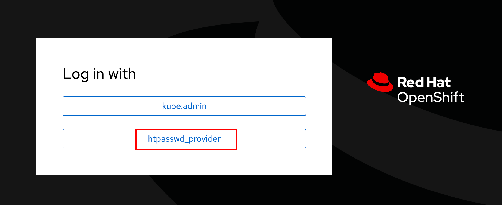

Pre-requisites
You need to create the appropriate users in the OpenShift cluster to do the hands-on labs in this learning path. You will configure HTTPassword based authentication for the OpenShift cluster in this section.
Configuring OpenShift Users and Authentication
Irrespective of how you provisioned your OpenShift cluster, you need to configure a user account with cluster-administrator access, as well as five non-cluster-administrator accounts (to simulate developers using Dev Spaces) for OpenShift.
-
Download and inspect the following two YAML configuration files, which create an
adminuser with cluster-administrator access and five non-admin users (user1 - user5). The password for both theadminanduser1 - user5users isopenshift23. -
Log in to the OpenShift cluster as the
kubeadminuser using theocCLI$ oc login -u kubeadmin <OpenShift API URL>
-
Apply the two configuration files
$ oc replace -f authentication.yaml $ oc apply -f secret.yaml
Log out from the OpenShift web console and CLI. You may have to wait for 5 minutes while the changes take effect. You will see a login prompt with the
htpasswd_providerdisplayed.Figure 1. Updated Log in Page -
On the updated login page, click the
htpasswd_providerbutton, and log in as theadminuser with passwordopenshift23to access the OpenShift web console as a cluster administrator. Repeat the process for theuser1user and verify that you can access the OpenShift web console as a regular non-admin user.